16 Morphic
Morphic is the name given to Pharo's graphical interface. Morphic supports two main aspects: on one hand Morphic defines all the low-level graphical entities and related infrastructure (events, drawing,...) and on the other hand Morphic defines all the widgets available in Pharo. Morphic is written in Pharo, so it is fully portable between operating systems. As a consequence, Pharo looks exactly the same on Unix, MacOS and Windows. What distinguishes Morphic from most other user interface toolkits is that it does not have separate modes for composing and running the interface: all the graphical elements can be assembled and disassembled by the user, at any time. We thank Hilaire Fernandes for permission to base this chapter on his original article in French.
16.1 The history of Morphic
Morphic was developed by John Maloney and Randy Smith for the Self programming language, starting around 1993. Maloney later wrote a new version of Morphic for Squeak, but the basic ideas behind the Self version are still alive and well in Pharo Morphic: directness and liveness. Directness means that the shapes on the screen are objects that can be examined or changed directly, that is, by clicking on them using a mouse. Liveness means that the user interface is always able to respond to user actions: information on the screen is continuously updated as the world that it describes changes. A simple example of this is that you can detach a menu item and keep it as a button.
Bring up the World Menu and Option-Command-Shift click once on it to bring up its morphic halo, then repeat the operation again on a menu item you want to detach, to bring up that item's halo (see Figure 16.1).
Now duplicate that item elsewhere on the screen by grabbing the green handle as shown in Figure 16.1.
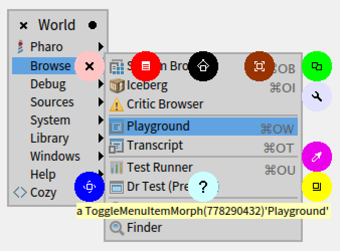Playground menu item, to make it an independent button.
Once dropped the menu item stays detached from the menu and you can interact with it as if it would be in the menu (see Figure 16.2).
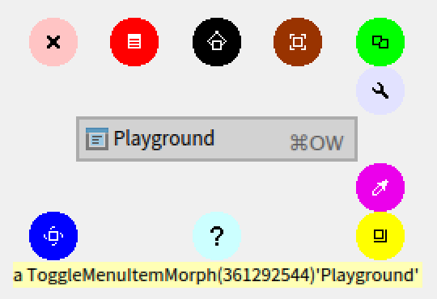Playground menu item is now an independent button.
This example illustrates what we mean by directness and liveness. This gives a lot of power when developing alternate user interface and prototyping alternate interactions.
Morphic is a bit showing its age, and the Pharo community is working since several years on a possible replacement. Replacing Morphic means to have both a new low-level infrastructure and a new widget sets. The project is called Bloc and got several iterations. Bloc is about the infrastructure and Brick is a set of widgets built on top. But let us have fun with Morphic.
16.2 Morphs
All of the objects that you see on the screen when you run Pharo are Morphs, that is, they are instances of subclasses of class Morph.
The class Morph itself is a large class with many methods; this makes it possible for subclasses to implement interesting behaviour with little code.
To create a morph to represent a string object, execute the following code in a Playground.
'Morph' asMorph openInWorldThis creates a Morph to represent the string 'Morph', and then opens it (that is, displays it) in the world, which is the name that Pharo gives to the screen.
You should obtain a graphical element (a Morph), which you can manipulate by meta-clicking.
Of course, it is possible to define morphs that are more interesting graphical representations than the one that you have just seen.
The method asMorph has a default implementation in class Object class that just creates a StringMorph.
So, for example, Color tan asMorph returns a StringMorph labeled with the result of Color tan printString.
Let's change this so that we get a coloured rectangle instead.
Now execute (Morph new colors: Color orange) openInWorld in a Playground.
Instead of the string-like morph, you get an orange rectangle (see Figure 16.3)!
You get the same executing (Morph new color: Color orange) openInWorld
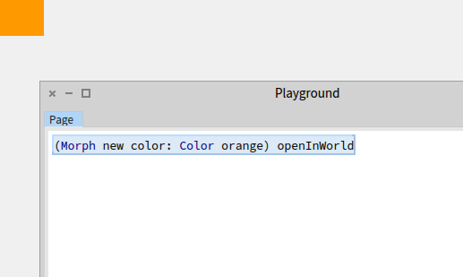(Morph new color: Color orange) openInWorld.
16.3 Manipulating morphs
Morphs are objects, so we can manipulate them like any other object in Pharo: by sending messages, we can change their properties, create new subclasses of Morph, and so on.
Every morph, even if it is not currently open on the screen, has a position and a size. For convenience, all morphs are considered to occupy a rectangular region of the screen; if they are irregularly shaped, their position and size are those of the smallest rectangular box that surrounds them, which is known as the morph's bounding box, or just its bounds.
- The
positionmethod returns aPointthat describes the location of the morph's upper left corner (or the upper left corner of its bounding box). The origin of the coordinate system is the screen's upper left corner, with y coordinates increasing down the screen and x coordinates increasing to the right. - The
extentmethod also returns a point, but this point specifies the width and height of the morph rather than a location.
Type the following code into a playground and Do it:
joe := Morph new color: Color blue.
joe openInWorld.
bill := Morph new color: Color red.
bill openInWorld.Then type joe position and then Print it. To move joe, execute joe
position: (joe position + (10@3)) repeatedly (see Figure 16.4).
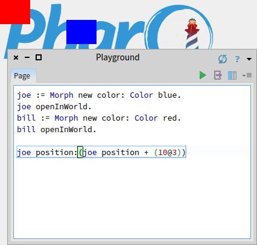
It is possible to do a similar thing with size. joe extent answers joe's size; to have joe grow, execute joe extent: (joe extent * 1.1). To change the color of a morph, send it the color: message with the desired Color object as argument, for instance, joe color: Color orange. To add transparency, try joe color: (Color orange alpha: 0.5).
To make bill follow joe, you can repeatedly execute this code:
bill position: (joe position + (100@0))If you move joe using the mouse and then execute this code, bill will move so
that it is 100 pixels to the right of joe. You can see the result on Figure 16.5. Nothing suprising.
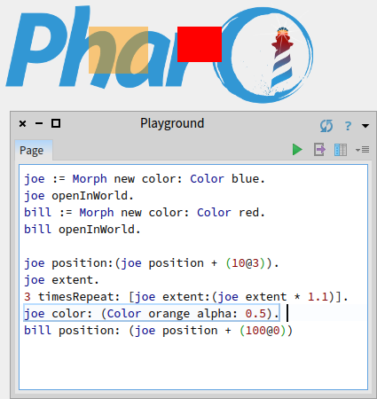
Note that you can delete the morphs you created by
- sending them the message delete
- selecting the cross in halos that you can bring using Meta-Option click.
16.4 Composing morphs
One way of creating new graphical representations is by placing one morph inside another. This is called composition; morphs can be composed to any depth. You can place a morph inside another by sending the message addMorph: to the
container morph.
Try adding a morph to another one as follows:
balloon := BalloonMorph new color: Color yellow.
joe addMorph: balloon.
balloon position: joe position.The last line positions the balloon at the same coordinates as joe.
Notice that the coordinates of the contained morph are still relative to the screen, not to the containing morph. This absolute way of positioning morph is not really good and it makes programming morphs feels a bit odd. But there are many methods available to position a morph; browse the geometry protocol of class Morph to see for yourself. For example, to center the balloon inside joe, execute balloon center: joe center.
If you now try to grab the balloon with the mouse, you will find that you actually grab joe, and the two morphs move together: the balloon is embedded inside joe. It is possible to embed more morphs inside joe. In addition to doing this programmatically, you can also embed morphs by direct manipulation.
16.5 Creating and drawing your own morphs
While it is possible to make many interesting and useful graphical representations by composing morphs, sometimes you will need to create something completely different.
To do this you define a subclass of Morph and override the drawOn: method to change its appearance.
The morphic framework sends the message drawOn: to a morph when it needs to redisplay the morph on the screen.
The parameter to drawOn: is a kind of Canvas; the expected behaviour is that the morph will draw itself on that
canvas, inside its bounds. Let's use this knowledge to create a cross-shaped morph.
Using the browser, define a new class CrossMorph inheriting from Morph:
Morph subclass: #CrossMorph
instanceVariableNames: ''
classVariableNames: ''
package: 'PBE-Morphic'We can define the drawOn: method like this:
CrossMorph >> drawOn: aCanvas
| crossHeight crossWidth horizontalBar verticalBar |
crossHeight := self height / 3.
crossWidth := self width / 3.
horizontalBar := self bounds insetBy: 0 @ crossHeight.
verticalBar := self bounds insetBy: crossWidth @ 0.
aCanvas fillRectangle: horizontalBar color: self color.
aCanvas fillRectangle: verticalBar color: self color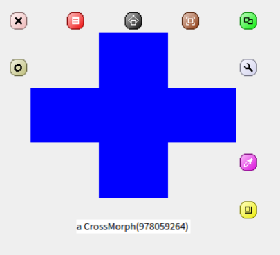CrossMorph with its halo; you can resize it as you wish.
Sending the bounds message to a morph answers its bounding box, which is an
instance of Rectangle.
Rectangles understand many messages that create other rectangles of related geometry.
Here, we use the insetBy: message with a point as its argument to create first a rectangle with reduced height, and then another rectangle with reduced width.
To test your new morph, execute CrossMorph new openInWorld.
The result should look something like Figure 16.7. However, you will notice that the sensitive zone — where you can click to grab the morph — is still the whole bounding box. Let's fix this.
When the Morphic framework needs to find out which Morphs lie under the cursor, it sends the message containsPoint: to all the morphs whose bounding boxes lie under the mouse pointer.
So, to limit the sensitive zone of the morph to the cross shape, we need to override the containsPoint: method.
Define the following method in class CrossMorph:
CrossMorph >> containsPoint: aPoint
| crossHeight crossWidth horizontalBar verticalBar |
crossHeight := self height / 3.
crossWidth := self width / 3.
horizontalBar := self bounds insetBy: 0 @ crossHeight.
verticalBar := self bounds insetBy: crossWidth @ 0.
^ (horizontalBar containsPoint: aPoint) or: [ verticalBar containsPoint: aPoint ]This method uses the same logic as drawOn:, so we can be confident that the points for which containsPoint: answers true are the same ones that will be colored in by drawOn:.
Notice how we leverage the containsPoint: method in class Rectangle to do the hard work.
There are two problems with the code in the two methods above.
The most obvious is that we have duplicated code.
This is a cardinal error: if we find that we need to change the way that horizontalBar or verticalBar are calculated, we are quite likely to forget to change one of the two occurrences.
The solution is to factor out these calculations into two new methods, which we put in the private protocol:
CrossMorph >> horizontalBar
| crossHeight |
crossHeight := self height / 3.
^ self bounds insetBy: 0 @ crossHeightCrossMorph >> verticalBar
| crossWidth |
crossWidth := self width / 3.
^ self bounds insetBy: crossWidth @ 0We can then define both drawOn: and containsPoint: using these methods:
CrossMorph >> drawOn: aCanvas
aCanvas fillRectangle: self horizontalBar color: self color.
aCanvas fillRectangle: self verticalBar color: self colorCrossMorph >> containsPoint: aPoint
^ (self horizontalBar containsPoint: aPoint) or: [ self verticalBar containsPoint: aPoint ]This code is much simpler to understand, largely because we have given meaningful names to the private methods. In fact, it is so simple that you may have noticed the second problem: the area in the center of the cross, which is under both the horizontal and the vertical bars, is drawn twice. This doesn't matter when we fill the cross with an opaque colour, but the bug becomes apparent immediately if we draw a semi-transparent cross, as shown in Figure 16.8.
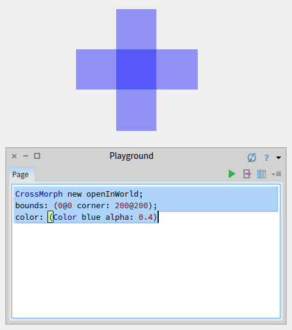
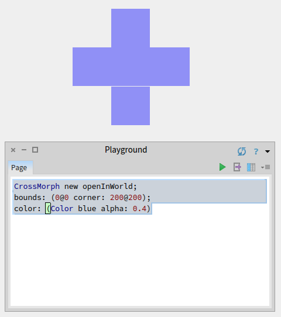
Execute the following code in a playground:
CrossMorph new openInWorld;
bounds: (0@0 corner: 200@200);
color: (Color blue alpha: 0.4)The fix is to divide the vertical bar into three pieces, and to fill only the
top and bottom.
Once again we find a method in class Rectangle that does the hard work for us: r1 areasOutside: r2 answers an array of rectangles
comprising the parts of r1 outside r2.
Here is the revised code:
CrossMorph >> drawOn: aCanvas
| topAndBottom |
aCanvas fillRectangle: self horizontalBar color: self color.
topAndBottom := self verticalBar areasOutside: self horizontalBar.
topAndBottom do: [ :each | aCanvas fillRectangle: each color: self color ]This code seems to work, but if you try it on some crosses and resize them, you may notice that at some sizes, a one-pixel wide line separates the bottom of the cross from the remainder, as shown in Figure 16.9.
This is due to rounding: when the size of the rectangle to be filled is not an integer, fillRectangle: color: seems to round inconsistently, leaving one row of pixels unfilled.
We can work around this by rounding explicitly when we calculate the sizes of the bars as shown hereafter:
CrossMorph >> horizontalBar
| crossHeight |
crossHeight := (self height / 3) rounded.
^ self bounds insetBy: 0 @ crossHeightCrossMorph >> verticalBar
| crossWidth |
crossWidth := (self width / 3) rounded.
^ self bounds insetBy: crossWidth @ 016.6 Mouse events for interaction
To build live user interfaces using morphs, we need to be able to interact with them using the mouse and keyboard. Moreover, the morphs need to be able respond to user input by changing their appearance and position — that is, by animating themselves.
When a mouse button is pressed, Morphic sends each morph under the mouse pointer the message handlesMouseDown:.
If a morph answers true, then Morphic immediately sends it the mouseDown: message; it also sends the mouseUp: message when the user releases the mouse button.
If all morphs answer false, then Morphic initiates a drag-and-drop operation.
As we will discuss below, the mouseDown: and mouseUp: messages are sent with an argument --- a MouseEvent object — that encodes the details of the mouse action.
Let's extend CrossMorph to handle mouse events. We start by ensuring that all crossMorphs answer true to the handlesMouseDown: message. Add the method to CrossMorph defined as follows:
CrossMorph >> handlesMouseDown: anEvent
^ trueSuppose that when we click on the cross, we want to change the color of the cross to red, and when we action-click on it, we want to change the color to yellow.
We define the mouseDown: method as follows:
CrossMorph >> mouseDown: anEvent
anEvent redButtonPressed
ifTrue: [ self color: Color red ]. "click"
anEvent yellowButtonPressed
ifTrue: [ self color: Color yellow ]. "action-click"
self changedNotice that in addition to changing the color of the morph, this method also sends self changed.
This makes sure that morphic sends drawOn: in a timely fashion.
Note also that once the morph handles mouse events, you can no longer grab it with the mouse and move it. Instead you have to use the halo: Option-Command-Shift click on the morph to make the halo appear and grab either the brown move handle or the black pickup handle at the top of the morph.
The anEvent argument of mouseDown: is an instance of MouseEvent, which is a subclass of MorphicEvent.
MouseEvent defines the redButtonPressed and yellowButtonPressed methods.
Browse this class to see what other methods it provides to interrogate the mouse event.
16.7 Keyboard events
To catch keyboard events, we need to take three steps.
- Give the keyboard focus to a specific morph. For instance, we can give focus to our morph when the mouse is over it.
- Handle the keyboard event itself with the
keyDown:method. This message is sent to the morph that has keyboard focus when the user presses a key. - Release the keyboard focus when the mouse is no longer over our morph.
Let's extend CrossMorph so that it reacts to keystrokes.
First, we need to arrange to be notified when the mouse is over the morph.
This will happen if our morph answers true to the handlesMouseOver: message.
CrossMorph >> handlesMouseOver: anEvent
^ trueThis message is the equivalent of handlesMouseDown: for the mouse position.
When the mouse pointer enters or leaves the morph, the mouseEnter: and mouseLeave: messages are sent to it.
Define two methods so that CrossMorph catches and releases the keyboard focus, a third method to be notified when a key is pressed, and a fourth method to actually handle the key down event.
CrossMorph >> mouseEnter: anEvent
anEvent hand newKeyboardFocus: selfCrossMorph >> mouseLeave: anEvent
anEvent hand releaseKeyboardFocus: selfCrossMorph >> handlesKeyDown: anEvent
^ trueCrossMorph >> keyDown: anEvent
| key |
key := anEvent key.
key = KeyboardKey up ifTrue: [ self position: self position - (0 @ 10) ].
key = KeyboardKey down ifTrue: [ self position: self position + (0 @ 10) ].
key = KeyboardKey right ifTrue: [ self position: self position + (10 @ 0) ].
key = KeyboardKey left ifTrue: [ self position: self position - (10 @ 0) ].We have written this method so that you can move the morph using the arrow keys.
To discover the key values, you can open a Transcript window and add Transcript show: anEvent keyValue to the handleKeystroke: method.
The anEvent argument of handleKeystroke: is an instance of KeyboardEvent, another subclass of MorphicEvent.
Browse this class to learn more about keyboard events.
If you want to move your morph with Ctrl- like shortcut, you could use code like:
anEvent controlKeyPressed ifTrue: [
anEvent keyCharacter == $d ifTrue: [
self position: self position + (0 @ 10) ] ]16.8 Morphic animations
Morphic provides a simple animation system with two main methods: step is sent to a morph at regular intervals of time, while stepTime specifies the time in milliseconds between steps.
stepTime is actually the minimum time between steps.
If you ask for a stepTime of 1 ms, don't be surprised if Pharo is too busy to step your morph that often.
In addition, startStepping turns on the stepping mechanism, while stopStepping turns
it off again.
isStepping can be used to find out whether a morph is currently being stepped.
Make CrossMorph blink by defining these methods as follows:
CrossMorph >> stepTime
^ 100CrossMorph >> step
(self color diff: Color black) < 0.1
ifTrue: [ self color: Color red ]
ifFalse: [ self color: self color darker ]To start things off, you can open an inspector on a CrossMorph using the
debug handle which look like a wrench in the morphic halo, type self
startStepping in the small pane at the bottom, and Do it.
You can also redefine the initialize method as follows:
CrossMorph >> initialize
super initialize.
self startSteppingAlternatively, you can handle key stroke so that you can
use the + and - keys to start and stop stepping.
Typically text is managed using the KeyStroke events while shortcuts are managed in KeyUp and KeyDown events.
To handle key stroke, we need a method to be notified when a key is pressed, and a second method to actually handle the key stroke event.
CrossMorph >> handlesKeyStroke: anEvent
^ trueCrossMorph >> keyStroke: anEvent
| keyValue |
keyValue := anEvent keyCharacter.
keyValue == $+ ifTrue: [ self startStepping ].
keyValue == $- ifTrue: [ self stopStepping ]16.9 Interactors
To prompt the user for input, the UIManager class provides a large number of
ready to use dialog boxes. For instance, the request:initialAnswer: method
returns the string entered by the user (Figure 16.10).
UIManager default
request: 'What''s your name?'
initialAnswer: 'no name'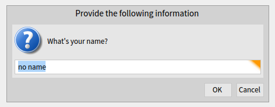
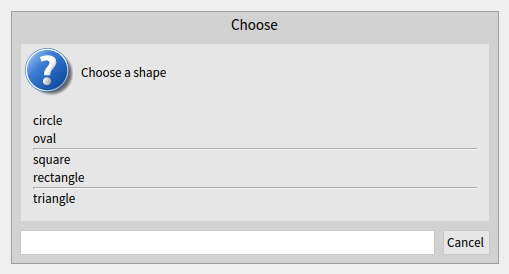
To display a popup menu, use one of the various chooseFrom: methods (Figure
16.11):
UIManager default
chooseFrom: #('circle' 'oval' 'square' 'rectangle' 'triangle')
lines: #(2 4) message: 'Choose a shape'Browse the UIManager class and try out some of the interaction methods offered.
16.10 Drag-and-drop
Morphic also supports drag-and-drop. Let's examine a simple example with two morphs, a receiver morph and a dropped morph. The receiver will accept a morph only if the dropped morph matches a given condition: in our example, the morph should be blue. If it is rejected, the dropped morph decides what to do.
Let's first define the receiver morph:
Morph subclass: #ReceiverMorph
instanceVariableNames: ''
classVariableNames: ''
package: 'PBE-Morphic'Now define the initialization method in the usual way:
ReceiverMorph >> initialize
super initialize.
color := Color red.
bounds := 0 @ 0 extent: 200 @ 200How do we decide if the receiver morph will accept or reject the dropped morph?
In general, both of the morphs will have to agree to the interaction.
The receiver does this by responding to wantsDroppedMorph:event:.
Its first argument is the dropped morph, and the second the mouse event, so that the receiver can, for example, see if any modifier keys were held down at the time of the drop.
The dropped morph is also given the opportunity to check and see if it likes the morph onto which it is being dropped, by responding to the message wantsToBeDroppedInto:.
The default implementation of this method (in class Morph) answers true.
ReceiverMorph >> wantsDroppedMorph: aMorph event: anEvent
^ aMorph color = Color blueWhat happens to the dropped morph if the receiving morph doesn't want it?
The default behaviour is for it to do nothing, that is, to sit on top of the receiving morph, but without interacting with it.
A more intuitive behavior is for the dropped morph to go back to its original position.
This can be achieved by the receiver answering true to the message repelsMorph:event: when it
doesn't want the dropped morph:
ReceiverMorph >> repelsMorph: aMorph event: anEvent
^ (self wantsDroppedMorph: aMorph event: anEvent) notThat's all we need as far as the receiver is concerned.
Create instances of ReceiverMorph and EllipseMorph in a playground:
ReceiverMorph new openInWorld;
bounds: (100@100 corner: 200@200).
EllipseMorph new openInWorld.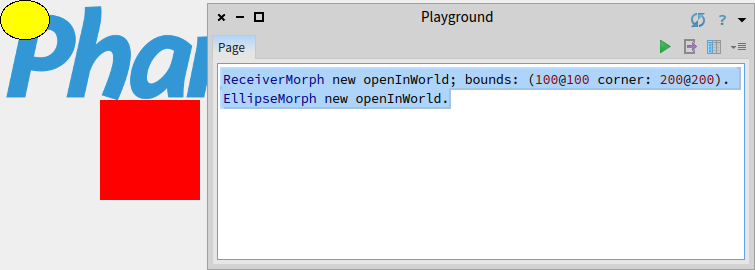ReceiverMorph and an EllipseMorph.
Try to drag and drop the yellow EllipseMorph onto the receiver.
It will be rejected and sent back to its initial position.
To change this behaviour, change the color of the ellipse morph to the color
blue (by sending it the message color: Color blue; right after new).
Blue morphs should be accepted by the ReceiverMorph.
Let's create a specific subclass of Morph, named DroppedMorph, so we can experiment a bit more.
Let us define a new kind of morph called DroppedMorph.
Morph subclass: #DroppedMorph
instanceVariableNames: ''
classVariableNames: ''
package: 'PBE-Morphic'DroppedMorph >> initialize
super initialize.
color := Color blue.
self position: 250 @ 100Now we can specify what the dropped morph should do when it is rejected by the receiver; here it will stay attached to the mouse pointer:
DroppedMorph >> rejectDropMorphEvent: anEvent
| h |
h := anEvent hand.
self currentWorld worldState defer: [ h grabMorph: self ].
anEvent wasHandled: trueSending the hand message to an event answers the hand, an instance of HandMorph that represents the mouse pointer and whatever it holds.
Here we tell the World that the hand should grab self, the rejected morph.
Create two instances of DroppedMorph of different colors, and then drag and drop them onto the receiver.
ReceiverMorph new openInWorld.
morph := (DroppedMorph new color: Color blue) openInWorld.
morph position: (morph position + (70@0)).
(DroppedMorph new color: Color green) openInWorld.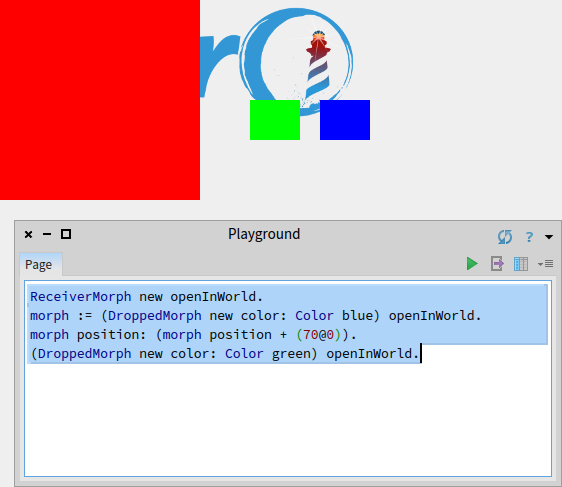DroppedMorph and ReceiverMorph.
The green morph is rejected and therefore stays attached to the mouse pointer.
16.11 A complete example
Let's design a morph to roll a die. Clicking on it will display the values of all sides of the die in a quick loop, and another click will stop the animation.
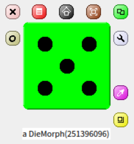
Define the die as a subclass of BorderedMorph instead of Morph, because
we will make use of the border.
BorderedMorph subclass: #DieMorph
instanceVariableNames: 'faces dieValue isStopped'
classVariableNames: ''
package: 'PBE-Morphic'The instance variable faces records the number of faces on the die; we allow dice with up to 9 faces! dieValue records the value of the face that is currently displayed, and isStopped is true if the die animation has stopped running.
To create a die instance, we define the faces: n method on the class side of DieMorph to create a new die with n faces.
DieMorph class >> faces: aNumber
^ self new faces: aNumberThe initialize method is defined on the instance side in the usual way;
remember that new automatically sends initialize to the newly-created
instance.
DieMorph >> initialize
super initialize.
self extent: 50 @ 50.
self
useGradientFill;
borderWidth: 2;
useRoundedCorners.
self setBorderStyle: #complexRaised.
self fillStyle direction: self extent.
self color: Color green.
dieValue := 1.
faces := 6.
isStopped := falseWe use a few methods of BorderedMorph to give a nice appearance to the die:
a thick border with a raised effect, rounded corners, and a color gradient on
the visible face.
We define the instance method faces: to check for a valid parameter as follows:
DieMorph >> faces: aNumber
"Set the number of faces"
((aNumber isInteger and: [ aNumber > 0 ]) and: [ aNumber <= 9 ])
ifTrue: [ faces := aNumber ]It may be good to review the order in which the messages are sent when a die is
created.
For instance, if we start by evaluating DieMorph faces: 9:
- The class method
DieMorph class >> faces:sendsnewtoDieMorph class. - The method for
new(inherited byDieMorph classfromBehavior) creates the new instance and sends it theinitializemessage. - The
initializemethod inDieMorphsetsfacesto an initial value of 6. DieMorph class >> newreturns to the class methodDieMorph class >> faces:, which then sends the messagefaces: 9to the new instance.- The instance method
DieMorph >> faces:now executes, setting thefacesinstance variable to 9.
Before defining drawOn:, we need a few methods to place the dots on the displayed face:
DieMorph >> face1
^ {(0.5 @ 0.5)}DieMorph >> face2
^{0.25@0.25 . 0.75@0.75}DieMorph >> face3
^{0.25@0.25 . 0.75@0.75 . 0.5@0.5}DieMorph >> face4
^{0.25@0.25 . 0.75@0.25 . 0.75@0.75 . 0.25@0.75}DieMorph >> face5
^{0.25@0.25 . 0.75@0.25 . 0.75@0.75 . 0.25@0.75 . 0.5@0.5}DieMorph >> face6
^{0.25@0.25 . 0.75@0.25 . 0.75@0.75 . 0.25@0.75 . 0.25@0.5 . 0.75@0.5}DieMorph >> face7
^{0.25@0.25 . 0.75@0.25 . 0.75@0.75 . 0.25@0.75 . 0.25@0.5 . 0.75@0.5 . 0.5@0.5}DieMorph >> face8
^{0.25@0.25 . 0.75@0.25 . 0.75@0.75 . 0.25@0.75 . 0.25@0.5 . 0.75@0.5 . 0.5@0.5 . 0.5@0.25}DieMorph >> face9
^{0.25@0.25 . 0.75@0.25 . 0.75@0.75 . 0.25@0.75 . 0.25@0.5 . 0.75@0.5 . 0.5@0.5 . 0.5@0.25 . 0.5@0.75}These methods define collections of the coordinates of dots for each face. The coordinates are in a square of size 1x1; we will simply need to scale them to place the actual dots.
The drawOn: method does two things: it draws the die background with the super-send, and then draws the dots as follows:
DieMorph >> drawOn: aCanvas
super drawOn: aCanvas.
(self perform: ('face', dieValue asString) asSymbol)
do: [ :aPoint | self drawDotOn: aCanvas at: aPoint ]The second part of this method uses the reflective capacities of Pharo.
Drawing the dots of a face is a simple matter of iterating over the collection given by the faceX method for that face, sending the drawDotOn:at: message for each coordinate.
To call the correct faceX method, we use the perform: method which sends a message built from a string, ('face',
dieValue asString) asSymbol.
DieMorph >> drawDotOn: aCanvas at: aPoint
aCanvas
fillOval: (Rectangle
center: self position + (self extent * aPoint)
extent: self extent / 6)
color: Color blackSince the coordinates are normalized to the [0:1] interval, we scale them to the dimensions of our die: self extent * aPoint.
We can already create a die instance from a playground (see result on Figure 16.15):
(DieMorph faces: 6) openInWorld.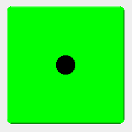(DieMorph faces: 6) openInWorld
To change the displayed face, we create an accessor that we can use as myDie dieValue: 5:
DieMorph >> dieValue: aNumber
((aNumber isInteger and: [ aNumber > 0 ]) and: [ aNumber <= faces ])
ifTrue: [
dieValue := aNumber.
self changed ](DieMorph faces: 6) openInWorld; dieValue: 5.
Now we will use the animation system to show quickly all the faces:
DieMorph >> stepTime
^ 100DieMorph >> step
isStopped ifFalse: [self dieValue: (1 to: faces) atRandom]Now the die is rolling!
To start or stop the animation by clicking, we will use what we learned previously about mouse events. First, activate the reception of mouse events:
DieMorph >> handlesMouseDown: anEvent
^ trueSecond, we will stop and start alternatively a roll on mouse click.
DieMorph >> mouseDown: anEvent
anEvent redButtonPressed
ifTrue: [isStopped := isStopped not]Now the die will roll or stop rolling when we click on it.
16.12 More about the canvas
The drawOn: method has an instance of Canvas as its sole argument; the
canvas is the area on which the morph draws itself.
By using the graphics methods of the canvas you are free to give the appearance you want to a morph.
If you browse the inheritance hierarchy of the Canvas class, you will see that it has several variants.
The default variant of Canvas is FormCanvas, and you will find the key graphics methods in Canvas and
FormCanvas.
These methods can draw points, lines, polygons, rectangles, ellipses, text, and images with rotation and scaling.
It is also possible to use other kinds of canvas, for example to obtain transparent morphs, more graphics methods, antialiasing, and so on.
To use these features you will need an AlphaBlendingCanvas or a BalloonCanvas.
But how can you obtain such a canvas in a drawOn: method, when drawOn:
receives an instance of FormCanvas as its argument? Fortunately, you can
transform one kind of canvas into another.
To use a canvas with a 0.5 alpha-transparency in DieMorph, redefine
drawOn: like this:
DieMorph >> drawOn: aCanvas
| theCanvas |
theCanvas := aCanvas asAlphaBlendingCanvas: 0.5.
super drawOn: theCanvas.
(self perform: ('face', dieValue asString) asSymbol)
do: [:aPoint | self drawDotOn: theCanvas at: aPoint]That's all you need to do!
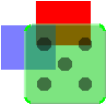
16.13 Chapter summary
Morphic is a graphical framework in which graphical interface elements can be dynamically composed.
- You can convert an object into a morph and display that morph on the screen by sending it the messages
asMorph openInWorld. - You can manipulate a morph using Command-Option+Shift click on it and using the handles that appear. (Handles have help balloons that explain what they do.)
- You can compose morphs by embedding one onto another, either by drag and drop or by sending the message
addMorph:. - You can subclass an existing morph class and redefine key methods, such as
initializeanddrawOn:. - You can control how a morph reacts to mouse and keyboard events by redefining the methods
handlesMouseDown:,handlesMouseOver:, etc. - You can animate a morph by defining the methods
step(what to do) andstepTime(the number of milliseconds between steps).